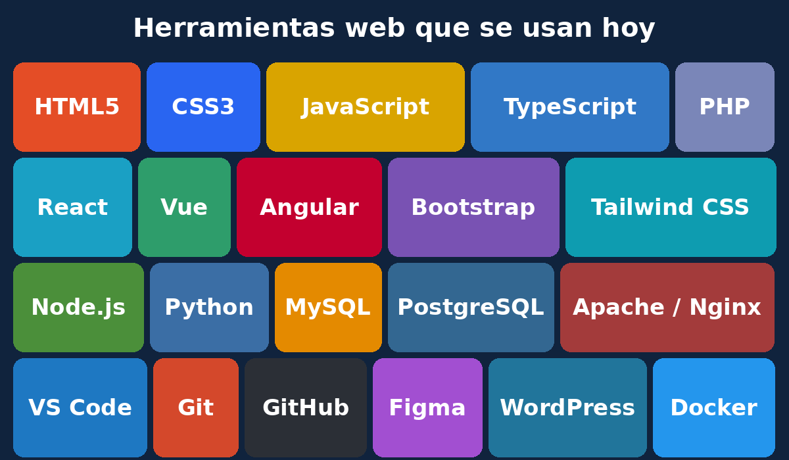
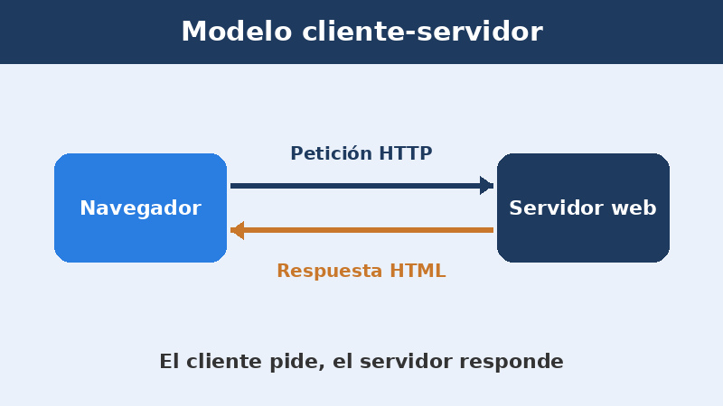

Portada: las tecnologías que hacen funcionar la web
Detrás de cada página hay lenguajes, herramientas y servidores que trabajan juntos. Este collage muestra las herramientas que se usan actualmente para crear sitios y aplicaciones web.

Cómo se agrupan estas herramientas
- Lenguajes: HTML5 (estructura), CSS3 (presentación) y JavaScript (interacción).
- Frameworks: React, Vue, Angular, Bootstrap y Tailwind CSS aceleran el desarrollo.
- Servidor y datos: Node.js, PHP, Python, MySQL, PostgreSQL, Apache y Nginx.
- Herramientas de trabajo: VS Code, Git, GitHub, Figma, WordPress y Docker.

Recorrido del sitio
- Páginas más usadas: qué son y para qué se usan.
- Nuevas tecnologías: cómo ayudan a la sociedad y a los negocios.
- Asesoría: formulario para negocios que quieren dar el paso.
Video resumen
Video recomendado
Este video explica la diferencia entre los lenguajes del lado del cliente y del lado del servidor. Autor: José Dimas Luján Castillo, en YouTube.